2001 DAYTON HAMVENTION
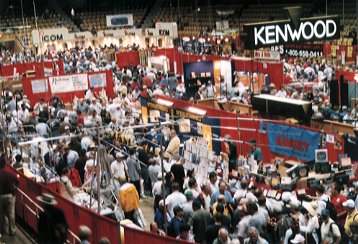
(18,19,20 May. Ohio U.S.A)
|
◎ 恒例のデイトン・ハムベンション(Dayton Hamvention)は今年も5月18-20日の3日間、
米国・オハイオ州のデイトンで開催された。 この時期のデイトンは天候が安定せず、今年も初日の18日(金曜日)は朝から雷を伴う大荒れの天候だったが、 この悪天候にも関わらず来年50回目を迎えるハムベンションの会場は国内・外からの来場者で相変わらずの大盛況だった。 |
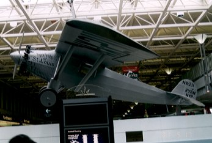
今年はミネアポリス(ミネソタ州)からデイトン入り
ミネアポリス空港に展示されている実物大？の
"Spirit of St Louis"号
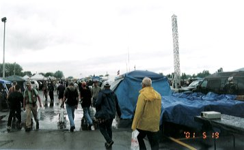
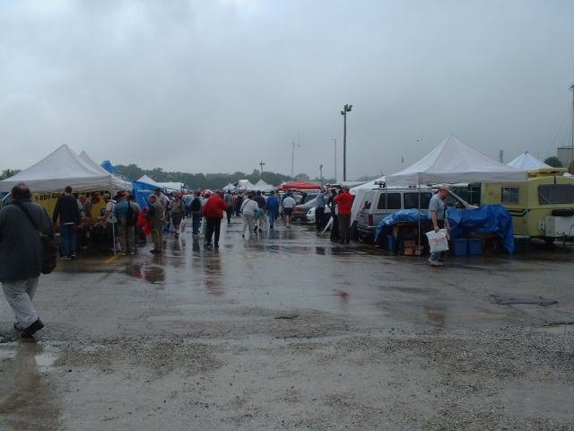
初日(18日)金曜日は生憎の悪天候。屋外の"Flea Market"は"洪水"状態となった
賑わうFlea Market
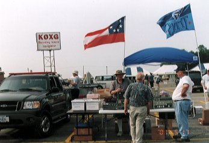
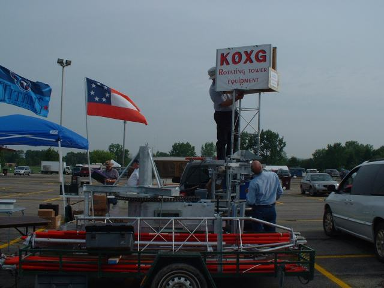
回転式タワーを持ち込んでいたK0XG
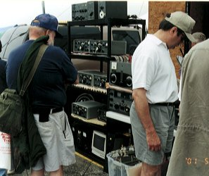

Collinsは今年も"大もて"／測定器の山
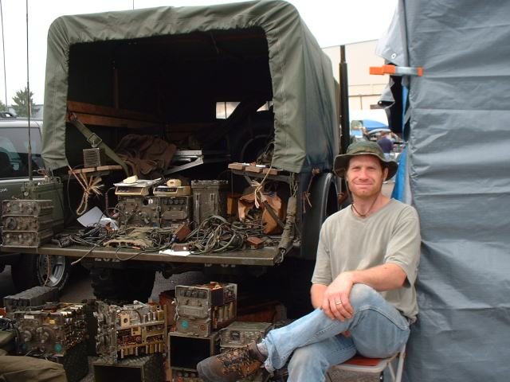
軍の"払い下げ品"も人気

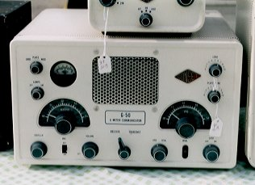
マニアには垂涎の的！ 新品同様？のGONSET製の6m Communicator・G-50と
2mの"Communicator 3"。専用の6m/2m用VFO付き三点セットのお値段は$200 !
|
"DX Forums"はサイクルのピークで多くのDXpeditionが行われた後でもあり、 300 - 400人は収容出来そうな特設会場が満席となる盛況だった。 プレゼンテーションのメインは、昨年10月に行われたKingman Reef・K5Kで、 PC画面の動画を混えたスライドで運用の模様が約1時間にわたりNI6T、N4XPから紹介された。 続いて、W0GJからはA5・ブータン(Bhutan)の免許状況の報告が行われた。 ブータンでは最近アマチュア無線の試験が行われ、約100人程の合格者があり、 A51AA、A51YLなど多くの"地元の局"が運用中との報告があった。 続いて、2月に実施され"総交信局数"など数々の歴代交信記録を塗り替えたComoros・D68Cの運用の模様が、G3NUGによりビデオで紹介された。 最後はK9LA、W4DRの両局から、Syria・YK9Aの運用がスライドで紹介された。 この日は、各DXpeditionに参加した多くのメンバーも会場に駆けつけ、各プレゼンテーションでは一人ずつメンバーの紹介が行われた。 今年の"DX Forums"は内容的にも充実したものだった。 今回のプログラムは次の通り。
○ DX Forums(Room 4 =8:30-12:30) Moderator: Steve Bolia, N8BJQ
0830 - 0900 "Passion Fruit, DX Spiders, and Real-Time Logging"
presented by Todd Benson, W9YK, Rick Royston, KF9ZZ and
William Lederer, W8LVN
0900 - 0930 DXCC Q & A, Presentation of Desoto Cup-by Wayne Mills, N7NG
0930 - 1030 "Kingman Reef/Palmyra DX Group presents Kingman Reef 2000"
presented by Garry Shapiro, NI6T and Tom Harrell, N4XP
1030 - 1045 A52GJ activities in 2001 by W0GJ
1045 - 1115 "Not just a DXpedition, more a phenomena!-the D68C story"
presented by Neville Cheadle, G3NUG
1115 - 1145 "YK9A 2001" presented by Carl Luetzelschwab, K9LA and Bob
Eshleman, W4DR
|

"DX Forums"に参加したD68Cのメンバー
左からJA1RJU、M0BJL、G3BJ、G3NUG、PE9PE
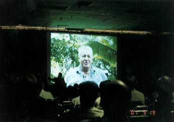
D68Cの模様は30分程のビデオで紹介された
Eyeball QSO
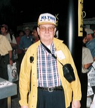
今年も参加していたKL7NO・AL
Nevada州(W7)にQSYしたKH7R・Kenも来場
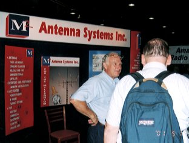
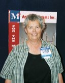
応対に忙しいM2 AntennaのK6MYC・MikeとXYLのK6MYM・Myrna
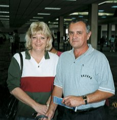
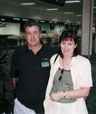
Dayton Hamventionに参加したオーストラリアの6mマン
VK2APG(左)とVK2FHNの御夫妻。帰り際にDayton空港でEyeball
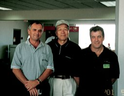
VK2APG(左)は帰国便でデトロイト空港まで一緒だった
VK2FHNは"世界一周"の後、タイ(HS)経由で帰国すると


ツアーに参加したJA's各局(一部は別便で帰国)／50周年記念のTシャツのデザイン